Your browser doesn't support the features required by impress.js, so you are presented with a simplified version of this presentation.
For the best experience please use the latest Chrome, Safari or Firefox browser.
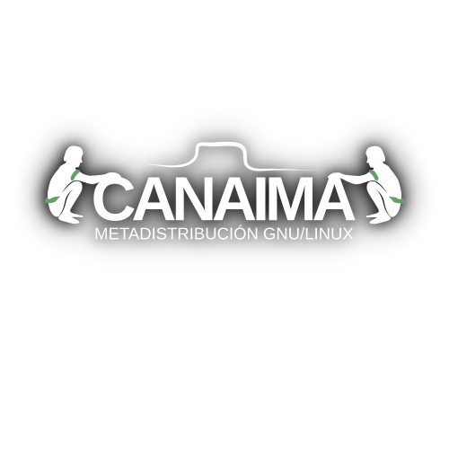

Revisión de
Conceptos
fundamentales
Una distribución GNU/Linux es un conjunto de software que se agrupa para proveer funcionalidades especializadas.
Una distribución contiene:
- Un núcleo o kernel.
- Una interfaz de usuario.
- Un conjunto de aplicaciones.
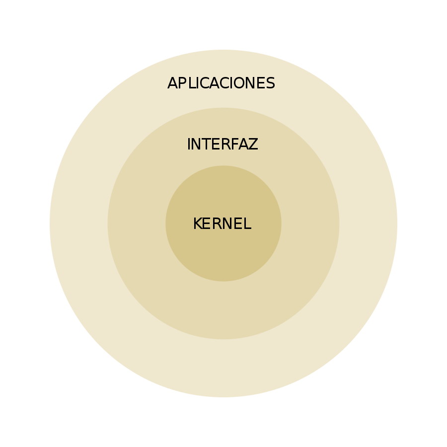
Un sistema operativo elemental consta de un núcleo y una interfaz de usuario.
Una metadistribución es una distribución que contiene las herramientas y la estructura necesaria para que se generen otras distribuciones a partir de ella.
Canaima es una metadistribución
De Canaima se derivan las siguientes distribuciones o
sabores:
- Canaima Popular (CNTI)
- Canaima Educativo (CNTI)
- Canaima CNTI (CNTI)
- Canaima CANTV (CANTV)
- Canaima Caribay (CENDITEL)
- Canaima Comunal (COMUNIDAD)
- Canaima Colibrí (COMUNIDAD)
- Canaima Forense (COMUNIDAD)
Canaima es Software Libre, significa que:
- Su propiedad es colectiva.
- Su código puede ser visto, modificado y distribuído libremente.
- Su esquema de trabajo es colaborativo y abierto.
- Sus aplicaciones son desarrolladas bajo lenguajes y estándares abiertos.
- Se procura estimular la participación comunitaria en la toma de decisiones.
- Canaima está basada en otra metadistribución: Debian
- Debian es un proyecto internacional0, con un esquema colaborativo basado en la excelencia del código y la descentralización del poder.
- Para la versión 7.0, Debian tenía 1743 desarrolladores 1 y ~28000 paquetes2.
- Para la versión 4.0, Canaima tenía 5 desarrolladores y 464 paquetes.
¿En qué consiste el trabajo de la
Oficina de Operaciones Canaima?
La oficina se divide en tres equipos:
- Plataforma - 4 personas
- Soporte - 1 persona
- Desarrollo - 7 personas
Equipo de plataforma
- Administración de los servidores (12 unidades).
- Administración de las máquinas virtuales.
- Mantenimiento de servicios críticos.
- Desarrollo de aplicaciones.
- Gestión de permisología.
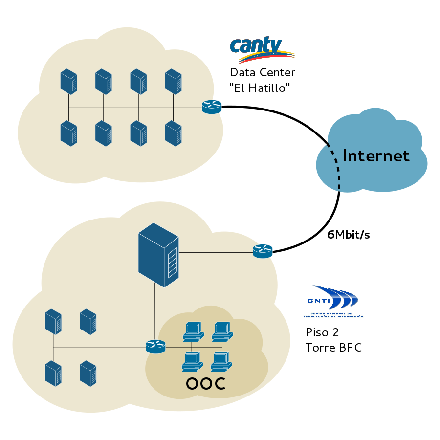
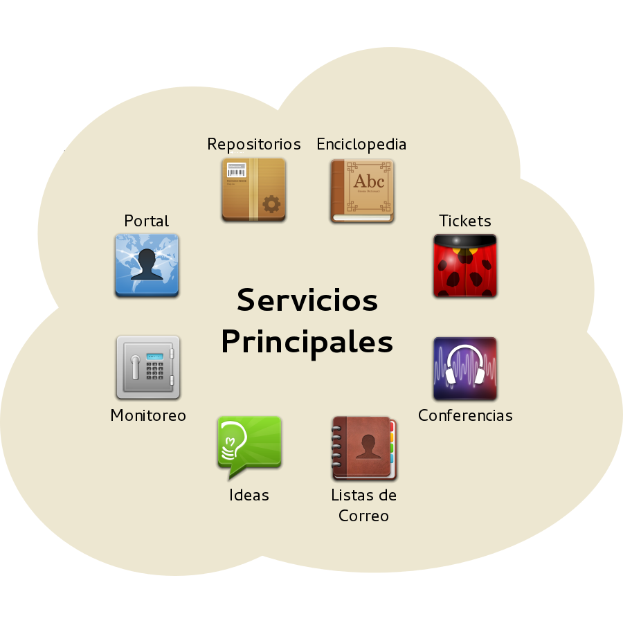
Resumen de plataforma
- Unidades: 8 CANTV + 4 CNTI.
- Almacenamiento: 2,3TB (discos) + 7,8TB (red).
- Memoria: 67GB.
- Servicios: 17 críticos, 8 complementarios, 11 comunidad, 29 experimentales.
- Mantenedores: 4 CNTI + 20 comunidad.
Equipo de soporte
- Proveer soporte de 3er y 4to nivel a las instituciones del estado y usuarios de Canaima.
- Documentar casos resueltos en la Enciclopedia Colaborativa.
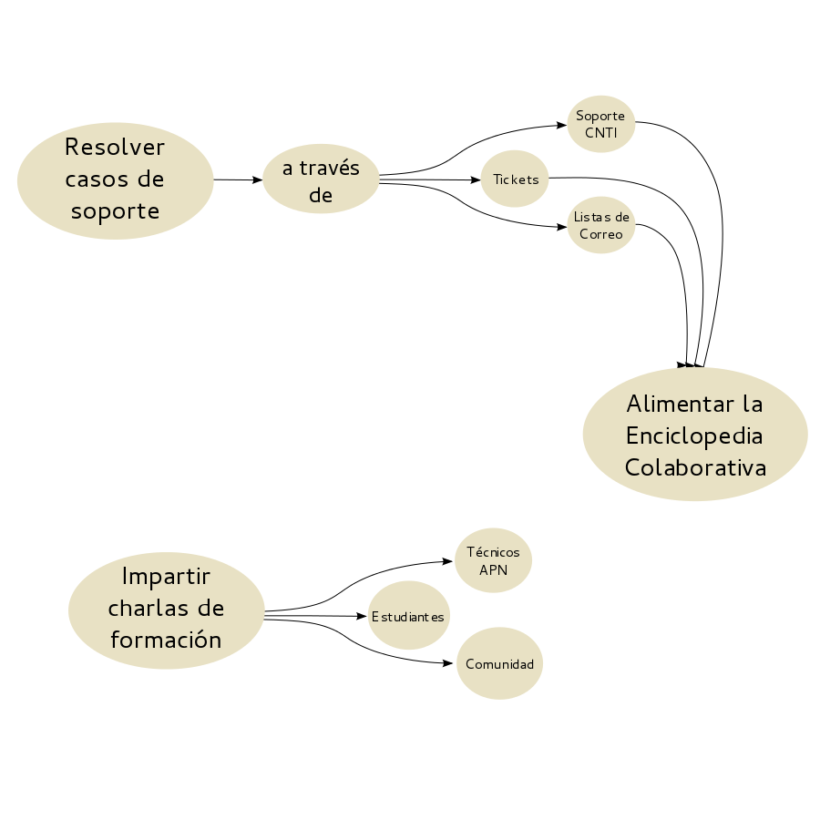
Equipo de desarrollo
- Estructurar los componentes básicos del Sistema Operativo.
- Proveer un conjunto de aplicaciones para ofimática, multimedia e internet.
- Desarrollar aplicaciones en base a las necesidades de los usuarios.
- Proveer una experiencia de usuario libre de errores.
- Asegurar la calidad de los productos.
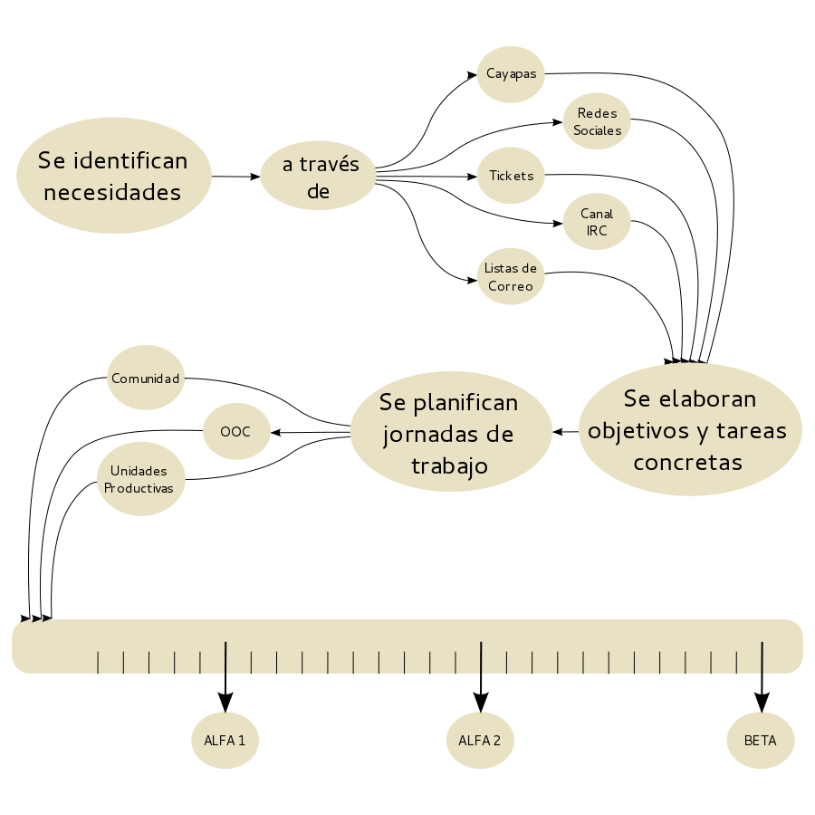
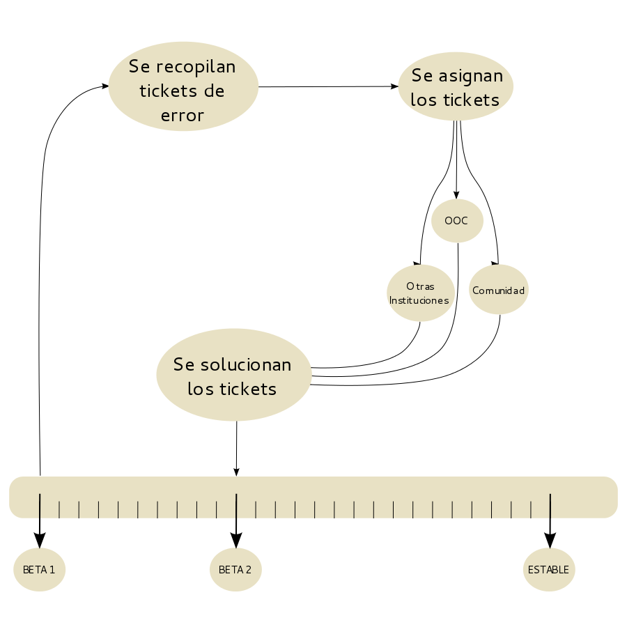
Retos Oportunidades Debilidades
Incentivar el desarrollo de aplicaciones Nacionales
Tribus
¿Qué es?
- Un automatizador de procesos.
- Un repositorio de software, arte, documentación, etc.
- Un sistema de valoración.
- Un sistema de asignación de privilegios.
- Un sistema para el seguimiento de proyectos.
- Un facilitador para el despliegue y gestión de plataforma.
- Una red social diferente.
¿Por qué es necesario tribus?
Porque Canaima tiene debilidades en las siguientes áreas:
- Políticas de colaboración en todas las áreas del proyecto.
- Automatización de procesos en general.
- Métodos de interacción comunitaria que promuevan la participación directa.
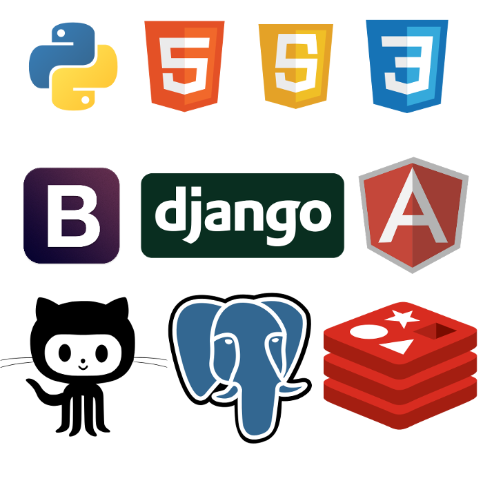
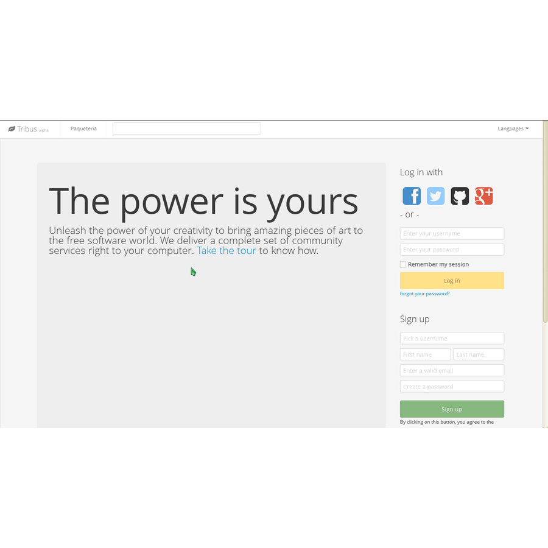
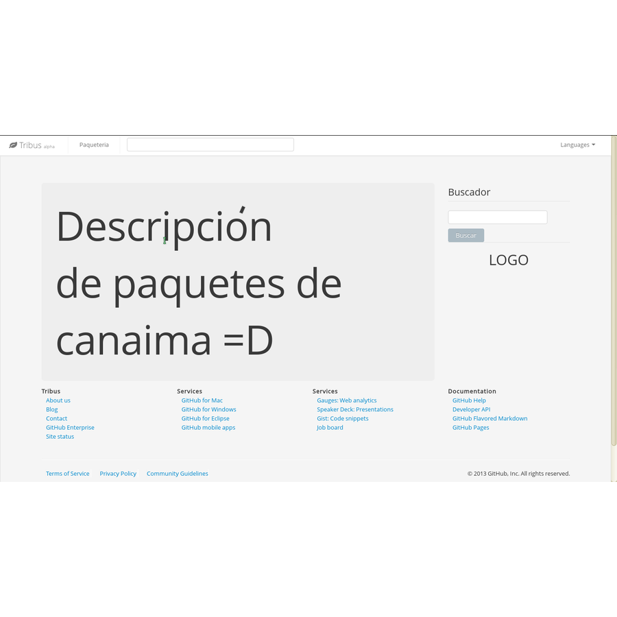
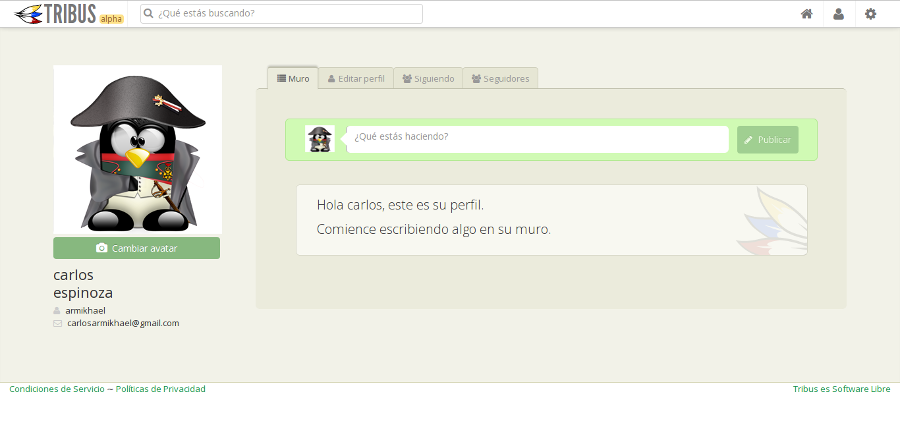
Tribus
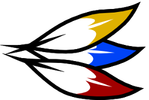
http://twitter.com/tribusdev
http://facebook.com/groups/tribusdev
http://github.com/CanaimaGNULinux/tribus